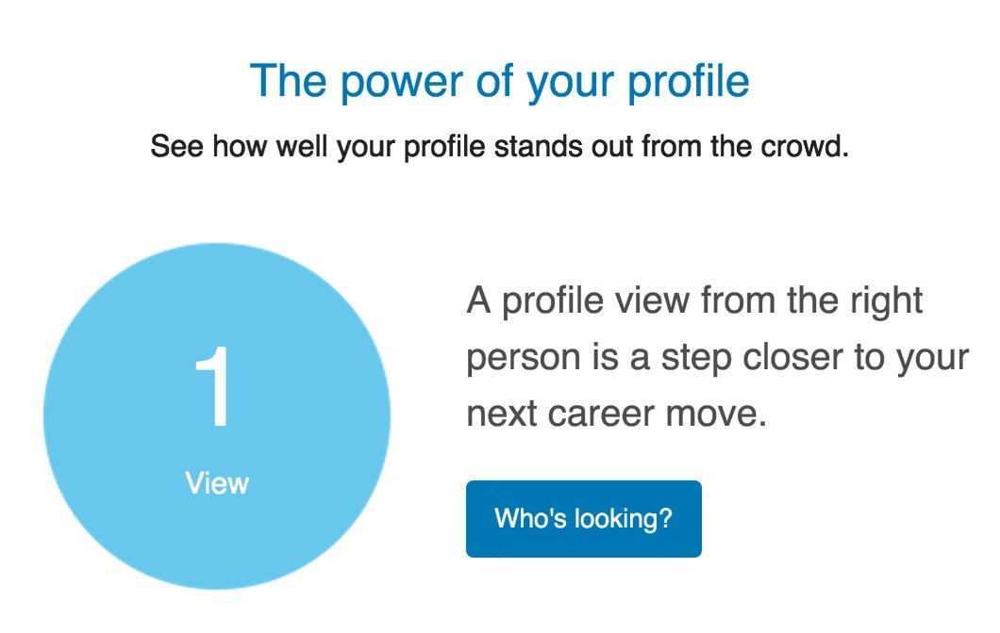

  	<div class="flex-wrap">
      
  	  <article class="tweet  " id="main">
  	    <p class="full_text">
  	      Inspired to greater heights by the traffic on my LinkedIn profile. <div class="gallery"><ul><li><a href="../../tweets_media/789234291242782722-CvPsNezVYAESGcM.jpg"></a></li></ul></div>
  	    </p>
  	    <p class="created_at">
  	      10/20/2016, 3:38:12 PM
  	    </p>
  	    <p class="favorite_count">Favs: 4</p>
  	    <p class="retweet_count">Retweets: 0</p>
  	    <a class="permalink" href="../789234291242782722">link</a>
  	  </article>

  	</div>
  </div>
